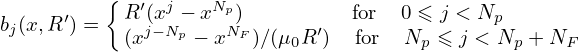
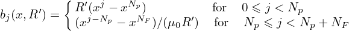
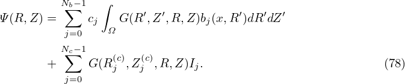
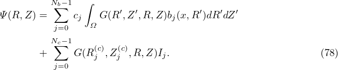

In the Cartesian coordinates, a point is described by its coordinates (x,y,z), which, in the vector form, is written as
|
| (72) |
where r is the location vector of the point;  ,
,  , and  are the basis vectors of the Cartesian
coordinates. The transformation between the Cartesian coordinates system, (x,y,z), and a general
coordinates system, (x1,x2,x3), can be expressed as
, and  are the basis vectors of the Cartesian
coordinates. The transformation between the Cartesian coordinates system, (x,y,z), and a general
coordinates system, (x1,x2,x3), can be expressed as
 | (73) |
(For example, cylindrical coordinates (R,ϕ,Z) can be considered as a general coordinate systems,
which are defined by  r = R cosϕ + R sinϕ + Z
+ R sinϕ + Z .) The transformation function in Eq. (73) can be
written as
.) The transformation function in Eq. (73) can be
written as
|
| (74) |
The Jacobian determinant (or simply called Jacobian) of the transformation in Eq. (74) is defined by
|
| (75) |
which can also be written as
|
| (76) |
It is easy to prove that the Jacobian ùí• in Eq. (76) can also be written (the derivation is given in my notes on Jacobian)
 | (77) |
In most cases, the Jacobian of the transformation from the Cartesian coordinates to a particular coordinate system are simply called the Jacobian of that particular coordinate system without mentioning that this transformation is with respect to the Cartesian coordinates. Using this nomenclature, the Jacobian ùí• of the Cartesian coordinates is obviously equal to one since the transformation is deÔ¨Åned with respect to the Cartesian coordinates. If the Jacobian of a coordinate system is greater than zero, it is called a right-hand coordinate system. Otherwise it is called a left-hand system.